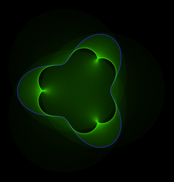
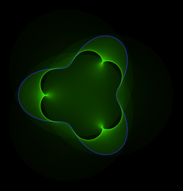
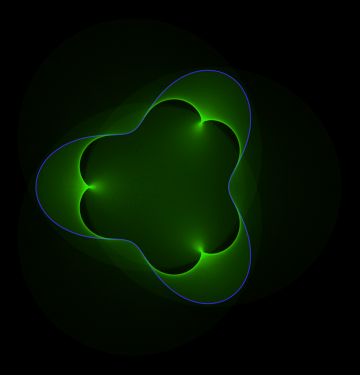

We have seen in the previous post the patterns made by the the tangents of certain parametric lines. This is a follow-up on that post and we will look at the same closed figures by plotting normals to them.
Definition: The simplest description of a normal is that it is a line segment perpendicular to the curve or the surface at the point where it is rooted. This is the Wikipedia link.
If you have a two-dimensional curve defined by the parametric equations x = x(t) and y = y(t)
Examples:
Note: In this series, there will not be a separate image for the curve and the normals. The curve will be a closed line and it will be conspicuous enough to be visually separable from the other lines.



The center of the above image zoomed in.